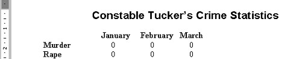

Free
computer Tutorials
|
Free
computer Tutorials
|
|
 home home |
|
||||
Changing Fonts and Font sizes in Microsoft WordA font is a style and design of text. Examine this letter: Now examine this one:
As you can see, the two style are completely different. Notice how straight and blocky the second one is compared to the first. The first one has little pointy bits on its edges. The pointy bit is called a serif. Fonts are basically split into two types - those that have the pointy edges, and those that don't. The pointy fonts are called serif fonts, and the ones without pointy bits are called sans serif fonts. The first of the letter e's is the very popular serif font "Times New Roman". The second letter e is the most popular sans serif font "Arial". With Microsoft Word, the font you get if you don't make any changes is Times New Roman. That's because Times is an excellent font to use for your body text. The complementary sans serif font Arial goes well as a heading when Times is used for the body text. Newspapers use this combination a lot - Arial for the heading, Times for the text. We'll do the same. We'll use Arial for the heading of our report, because the body text is all in Times New Roman. To change the font heading to Arial, do the following:
There are three main areas to concentrate on: Font, Font style, and Size. The Font that is highlighted is Times New Roman. This is because it is the font we are currently using. For the same reason, the regular Font style is highlighted and Size 14. We want to change the Font from Times to Arial.
We have now set the Font we want. To set the style, click on bold in the next text box along. Change the size by scrolling down and clicking on 16. Your font dialogue box should now look like this: Before you click the OK button, notice the "Font color" area. As it's name implies, you can set a colour for your Font. To do that, click the black down-pointing arrow just to the right of "Automatic". You'll get the colour box. Click on a colour that takes your fancy. You'll see what it looks like in the Preview box at the bottom. We won't worry at this stage about the Effects part of the dialogue box. So just click OK when you're finished. While the text is highlighted, click the centre align icon to centre your headings. Your heading should now look like this:  There is another way you can set the font, without opening the font dialogue box. You have probably noticed this in your toolbar: This is a shortcut to changing your Font and Font size. Don't worry about the first box "Normal" for now. If you click the black down-pointing arrow, just to the right of "Times New Roman", you'll get a drop down list of fonts: The Fonts available to you will probably be different to the ones above. To select one, just move your mouse down and click with your left hand mouse button. Click the black arrows to scroll down and see more fonts that you can choose. The font size box works in a similar way - click the black down arrow and you get a list of font sizes. Click on one to choose it.
Now that you can change the font, is there anything else we can do to Constable Tucker's report? One thing we can learn is how to set the page margins. Click here to learn about Page Margins --> |
|||||
|